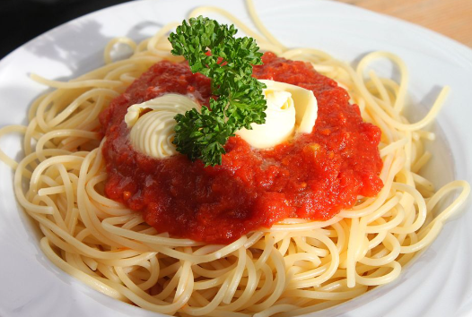

Ricetta della Pasta al Pomodoro

Istruzioni
Ingredienti
- 200g di pasta
- 400g di pomodori pelati
- 2 spicchi d'aglio
- 3 cucchiai di olio d'oliva
- Foglie di basilico
- Sale e pepe q.b.
Preparazione
- Scaldare l'olio in una padella e aggiungere l'aglio tritato.
- Aggiungere i pomodori pelati e cuocere per circa 15 minuti .
- Cuocere la pasta in acqua salata
- Unire la pasta alla salsa di pomodoro.
- Aggiungere basilico fresco e servire.
Valori Nutrizionali (per porzione)
| Calorie |
carboidrati |
proteine |
grassi |
| 350kcl |
70g |
10g |
5g |